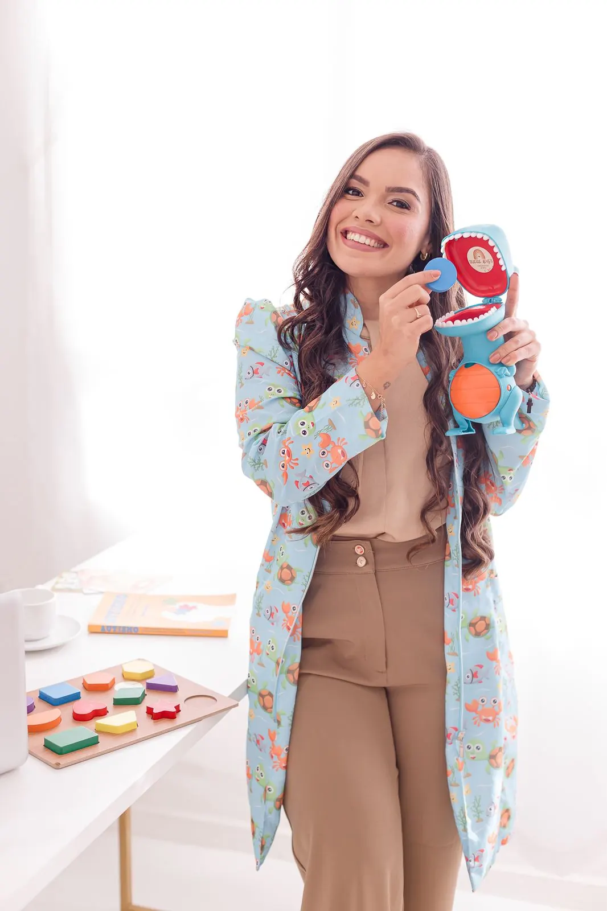
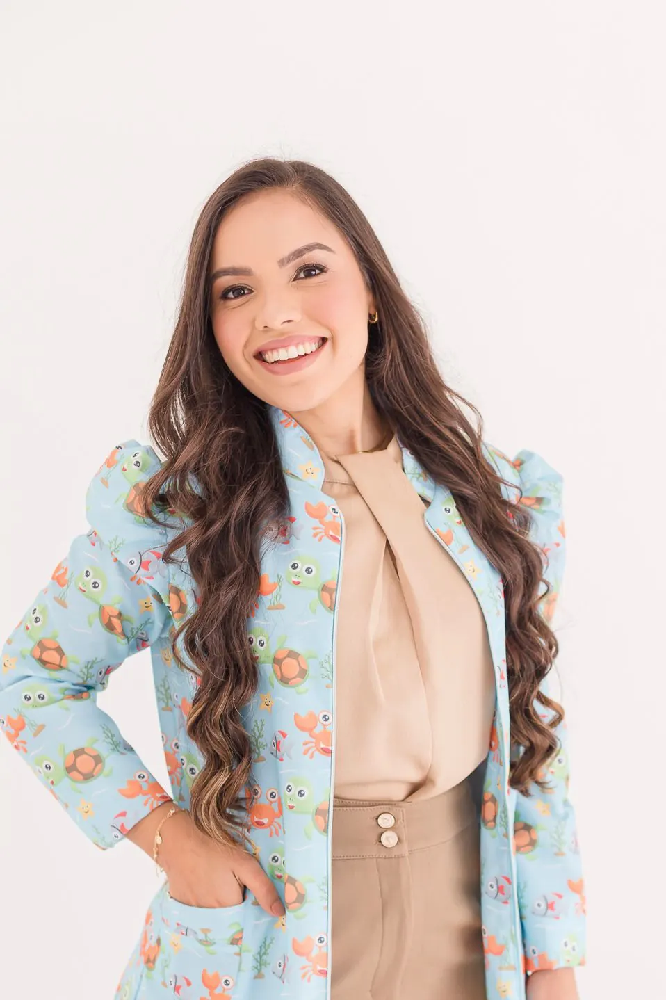
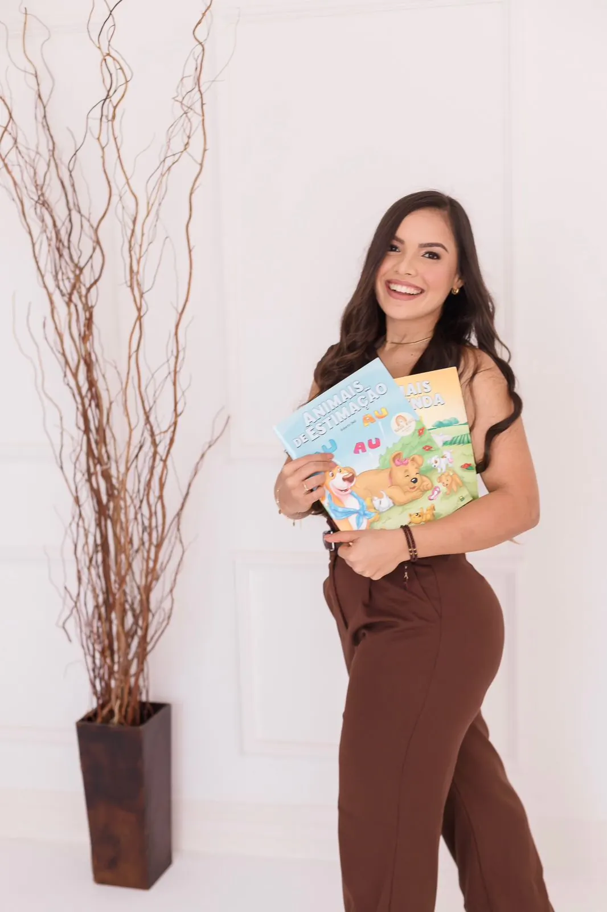

PresencialEm São José, SC
Uma sala pensada para a criança se sentir à vontade, com jogos, livros e materiais escolhidos para cada objetivo. Você acompanha de perto e recebe orientação ao fim das sessões.
AgendarAgendar presencialFonoaudióloga infantil, CRFa 3-12673-8
Na avaliação você descobre se é o tempo dele ou se ele precisa de ajuda. E já sai sabendo o que fazer em casa.
Escolha como prefere e agende pelo WhatsApp:
Sem formulário. Você fala direto comigo.

Assista
Gravei esse vídeo pensando nos pais preocupados com a fala do filho. São menos de 2 minutos.
Atendimento

PresencialUma sala pensada para a criança se sentir à vontade, com jogos, livros e materiais escolhidos para cada objetivo. Você acompanha de perto e recebe orientação ao fim das sessões.
AgendarAgendar presencial
OnlineSessões por vídeo com a família participando junto, o que ajuda a levar o que é trabalhado para o dia a dia. Os materiais chegam antes de cada encontro.
AgendarAgendar onlineDepoimentos
“Obrigada por todo cuidado, atenção e carinho […] sua ajuda foi essencial pra ele.”
Mãe do H., por mensagem
“Isso é prova de todo o seu cuidado e dedicação durante o processo de desenvolvimento do A.”
Mãe do A., por mensagem
“Muito obrigada por contribuir com o desenvolvimento do C.”
Mãe do C., por mensagem
“Ele amava os encontros com a tia Suh nas segundas.”
Mãe do H., por mensagem
“Eu e o S. estamos morrendo de saudades de você.”
Mãe do S., por mensagem
“Vamos perder uma grande profissional. Desejo muito sucesso nessa sua nova fase.”
Mãe de paciente, por mensagem
Talvez você já tenha pensado
Cada criança tem seu ritmo. Mas esperar sem saber é diferente de esperar com acompanhamento.
Você não está exagerando. Procurar orientação cedo é cuidado.
“Ele não consegue contar o que aconteceu na escola.”
“Só quem é de casa entende o que ela fala.”
“Troca o R pelo L e todo mundo acha fofo.”
“Trava no começo das palavras.”
“Me disseram que é só esperar.”
Como posso ajudar
Fala poucas palavras para a idade, não forma frases ou aponta em vez de pedir.
Fala “tasa” no lugar de “casa” ou “pato” no lugar de “prato”. Isso pesa depois na alfabetização.
Repete, prolonga ou trava nos sons. Trabalhamos a fluência e a confiança para falar sem medo.
Para crianças que ainda não falam, incluindo autistas. Um jeito de se comunicar agora, sem atrapalhar a fala.
Não consegue contar o que fez no dia ou não acha a palavra certa na hora de falar.
Guia rápido para pais
Escolha a idade. Se algum ponto chamar sua atenção, vale conversar com uma fonoaudióloga.
Esta lista não é diagnóstico. Ela ajuda você a decidir se procura uma avaliação.
Em qualquer idade, procure avaliação se a criança perdeu palavras que já falava, se trava ou repete sons há mais de 6 meses ou se você tem dúvida sobre a audição dela.
Baseado nos marcos do CDC/AAP (2022), da Sociedade Brasileira de Pediatria e da Stuttering Foundation.
Notei algum desses sinaisComo funciona
Me conta o que tem notado pelo WhatsApp e combinamos o melhor horário.
Converso com vocês e observo seu filho com atividades próprias para a idade.
Explico o que encontrei em palavras simples e você sai com orientações para casa.
Quem vai cuidar do seu filho
Sou fonoaudióloga infantil há mais de 5 anos e já acompanhei mais de 200 crianças de 2 a 12 anos.
Na minha sala a terapia parece brincadeira, mas cada jogo tem um objetivo. E a família entende o porquê de tudo, porque é em casa que a fala ganha força.
“O processo também merece ser celebrado, não só o resultado.”
Registro profissional CRFa 3-12673-8
Se ele ainda não chegou nos marcos esperados para a idade, o indicado é avaliar. A avaliação mostra se é só uma variação do desenvolvimento ou se precisa de acompanhamento. Se estiver tudo bem, você sai tranquila.
Em muitos casos sim, principalmente com a família participando. Na primeira conversa eu digo com sinceridade se o online é indicado para o seu filho ou se o presencial é melhor.
Não. Você pode agendar direto comigo. Se for preciso, eu indico avaliações complementares, como a da audição.
O Código de Ética da Fonoaudiologia não permite divulgar valores em sites. Me chama no WhatsApp que eu passo os valores e as formas de pagamento.
Depende da criança e da frequência das sessões. Depois da avaliação eu explico os objetivos e fazemos reavaliações para acompanhar a evolução juntos.
Me conta o que você tem percebido no seu filho. Eu respondo e explico os próximos passos.